Introduction
The main focus of the project is to learn the Vulkan API, gain a better understanding of rendering/shader programming at a low level, improve my C++ skills and most importantly, to help me gain a deeper undestanding of the field of Computer Graphics and real-time rendering to be able to pursue research in the field.CURRENT STATE OF THE RENDERER:
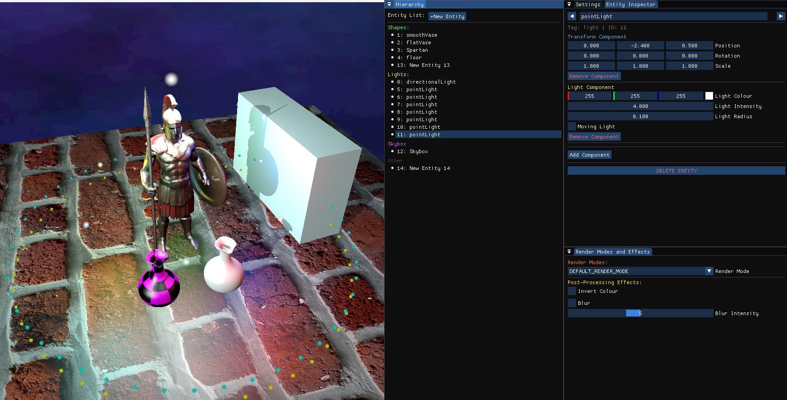
The Vulkan Renderer is a personal project developed during my Master's.
Another focus is for me to be able to read and understand the vulkan documentation to be able
to implement my own features in the renderer.
Project Structure and Implemented features
Using C++ and the Vulkan API, I have implemented various graphics and optimisation features. The base of the renderer was made with the help of the Vulkan tutorial. Other features were implemented completely by me using the Vulkan Official Documentation.
Libraries / Extensions:
- Vulkan SDK/Library
- GLFW / Window Creation
- GLM / Vectors and Matrices
- SPDLOG / Better debugging and logging
- IMGUI / Imgui window
- TINYOBJLOADER / Loading .obj models
Engine Structure:
- Vulkan Instance
- Physical Device / GPU
- Logical Device
- Host / CPU
- Swap Chain
Engine Implementation Features:
- Dynamic Window resizing
- Vertex / Index / Staging / Uniform / SSBO Buffers
- Push Constants
- Descriptor Sets
- Dynamic Rendering
- Multi-Pass
- ImGUI
- Bindless Texture Mapping
- Entity Component System
- Scene hierarchy and Entity manipulation
Multipass: Writing to a texture off screen and rendering it on a fullscreen triangle. This allows the manipulation of the texture before rendering, such as post processing effects.
Bindless textures: Textures are not bound to pipelines, meaning each object's texture can be dynamically changed on runtime. All textures are passed in within a single binding of a descriptor set.
Entity Component System: Wrote my own ECS and used it with ImGui for creating, manipulating and deleting entities on runtime. Add/Remove components, change component values such as transformation, colour, mesh, light etc.
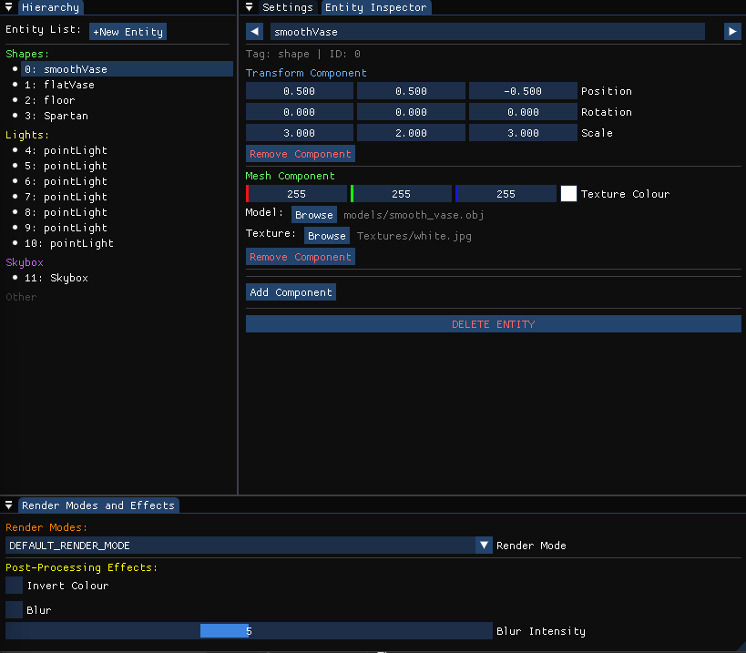
Shader Stage / Features:
- Vertex Shader
- Fragment Shader
- Compute Shaders
Shader Implementations:
- Blinn Phong Lighting model
- Billboards (for the light sources visual)
- Multiple Lights
- Alpha Blending and Transparency
- Skybox
- Shadow Mapping:
- Directional Lighting
- PCF
- Shadow Sampler
- Shadow Bias
- Peter Planning
- Invert Colours
- Dynamic Gaussian Blur
- Particle System with SSBO

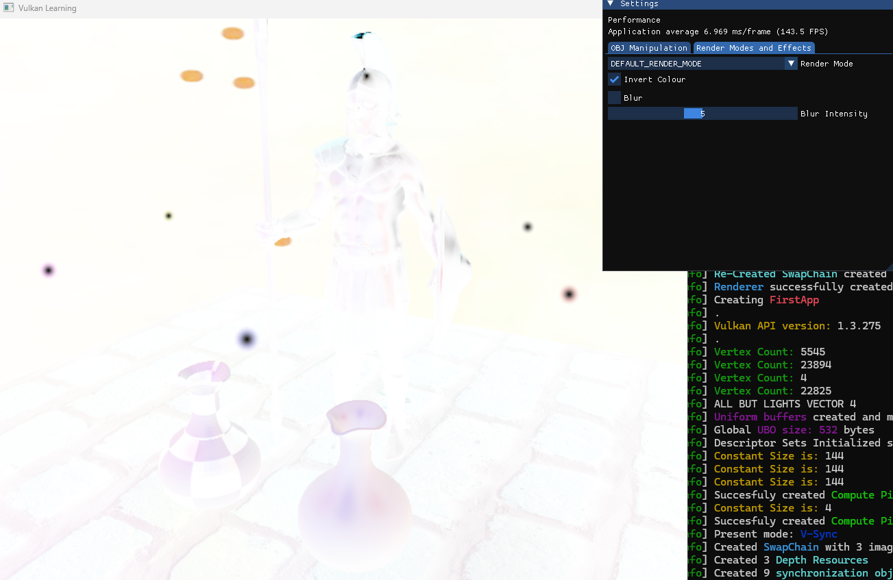
Blur intensity controlled through ImGUI:
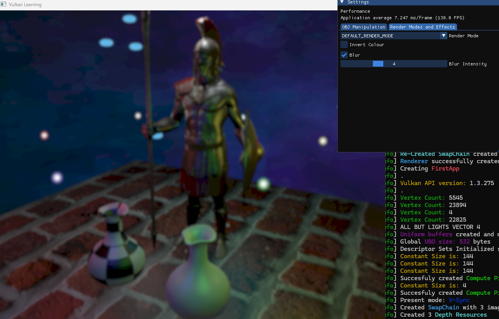
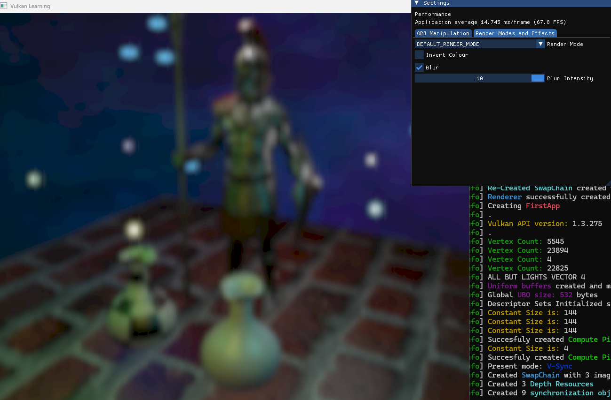
Post processing effects can be added simultaneously (blur and invert):
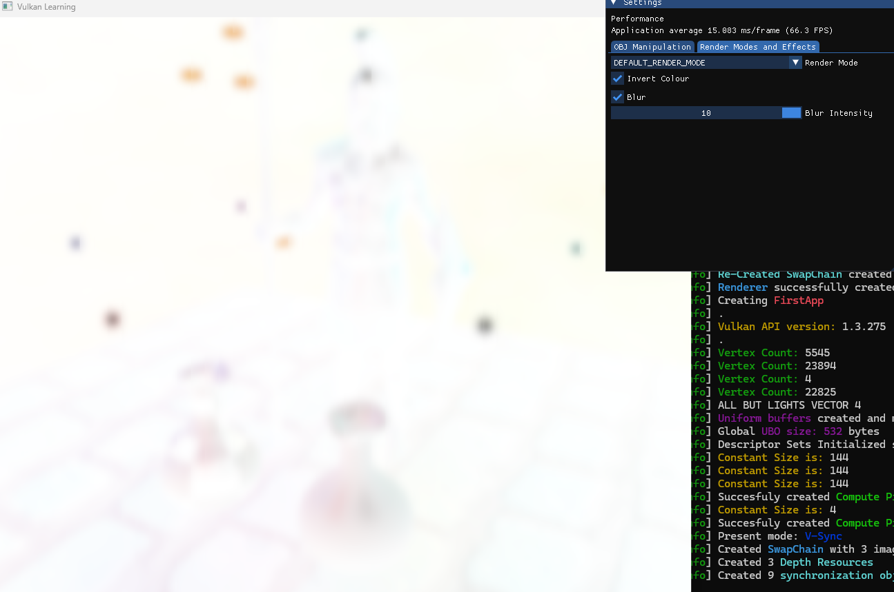
Rings are Particles made with SSBOs:

Shadow Mapping and shadow manipulation through ImGUI:
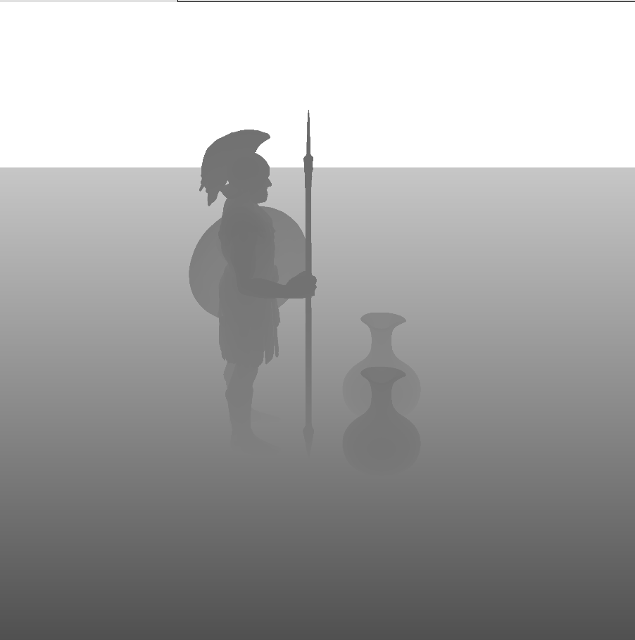
.png)
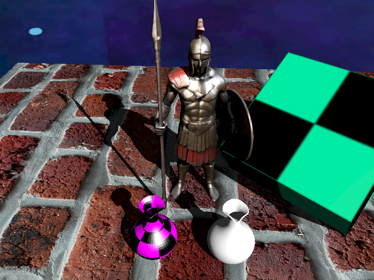
Differences in shadows: default / PCF / PCF with Shadow Sampler
(Example is a shadow of a vase model on another vase model)Changing to PCF already makes a massive differences. Shadow sampler removes the obvious shadow pixels that PCF has and makes them much smoother.
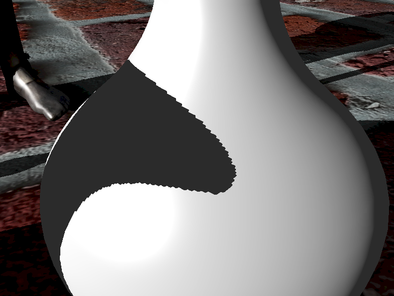
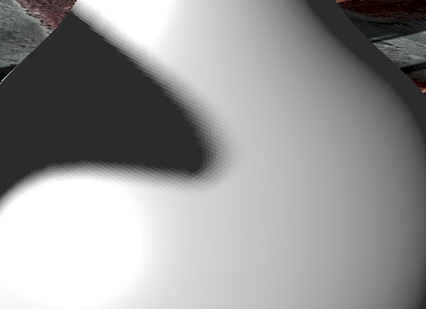
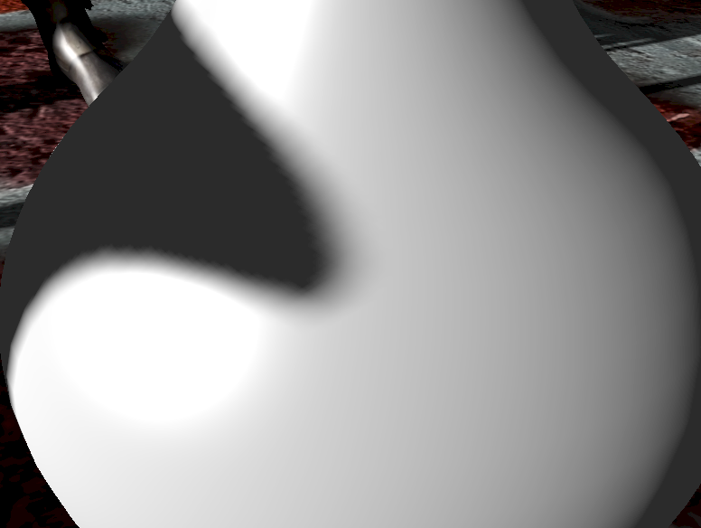
ImGUI Features
Object Manipulation
Including:
- Object Selection/Hierarchy
- 3D Position
- 3D Rotation
- 3D Scaling
- Colour Picker
- Texture Picker
- Add/Remove components
- Create/Destroy Entities
- Light/Shadow manipulation
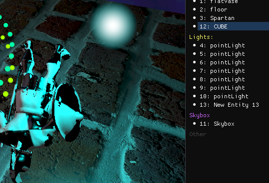
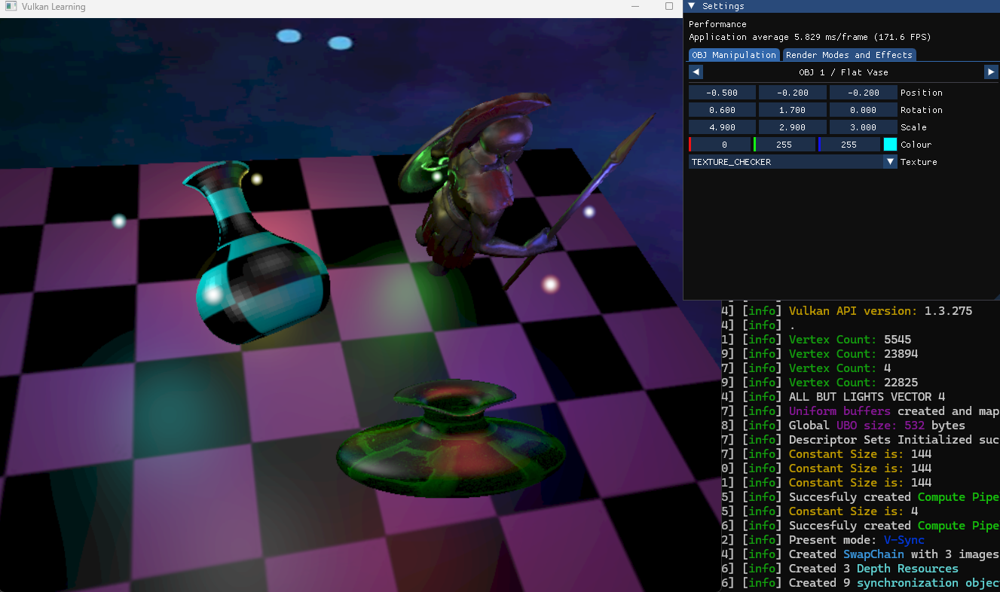
Render Modes and Effects
Including:
- Wireframe View
- Point/Vertex View
- Enabling Post Processing Effects
- Blur Intensity
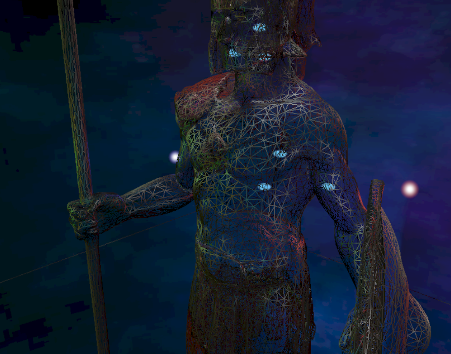
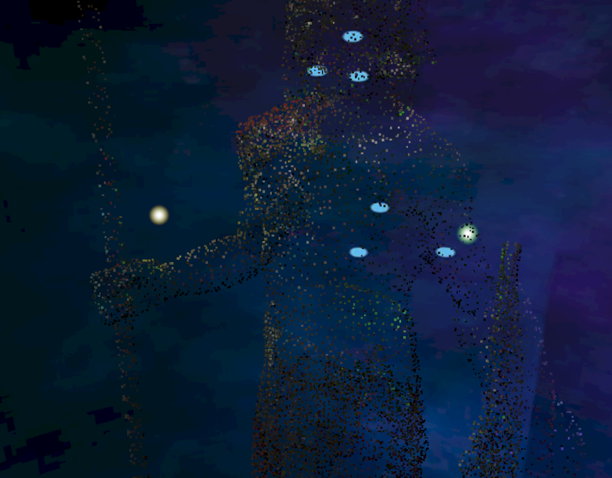
Summary
Technical Skills Demonstrated
- Understanding of the Vulkan API
- Cmake project structure
- Version Control through Github
- Debugging with RenderDoc
Future Goals:
(Project is still in devlopment)
- Explore more shader stages and pipelines (Geometry, Tessellation)
- Physical based rendering
- LOD model generator
- Ray Tracing Pipeline
- Deferred Rendering
- Noise Generation for height maps
- Shader Graph
- Shadow Mapping (PCF / Shadow Sampler)
- Dynamic Rendering
- Multipass
- Post Processing
- Texture Mapping
- Entity Component System
- SSBO
- ImGui Hierarchy/Scene Creator
- Compute Shaders/Pipeline
- Bindless Descriptor Sets
- Dynamic Rendering
- Scene hierarchy ImGUI
- Entity manipulation ImGUI